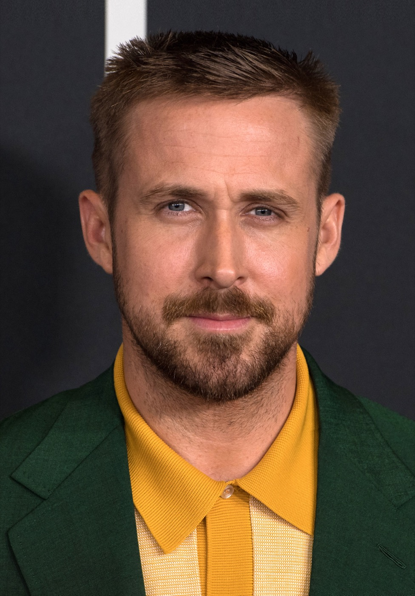
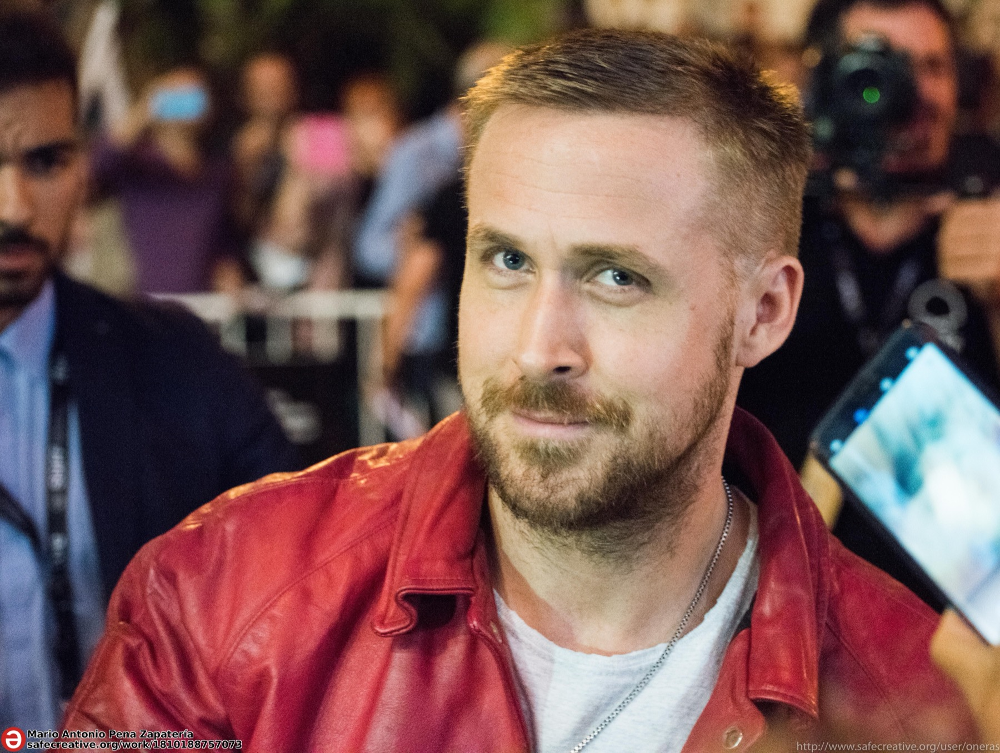

01
2011 · Nicolas Winding Refn
Драйв
Безымянный водитель. Минимум слов, максимум присутствия — роль, ставшая современной экранной иконой.
Актёр · режиссёр · музыкант

Los AngelesSelected works / 2001—2024
01 / PROFILE
Гослинг строит персонажей через паузы, жесты и внутреннее напряжение — от уязвимых романтиков до молчаливых антигероев.
02 / SELECTED WORK
2011 · Nicolas Winding Refn
Безымянный водитель. Минимум слов, максимум присутствия — роль, ставшая современной экранной иконой.
03 / PATH
От детского телевидения до авторского кино и мировых блокбастеров.
The Mickey Mouse Club
The Believer
Half Nelson
Lost River
Barbie

04 / OFF SCREEN
Готический фолк-проект Райана Гослинга и Зака Шилдса. Единственный студийный альбом вышел в 2009 году.